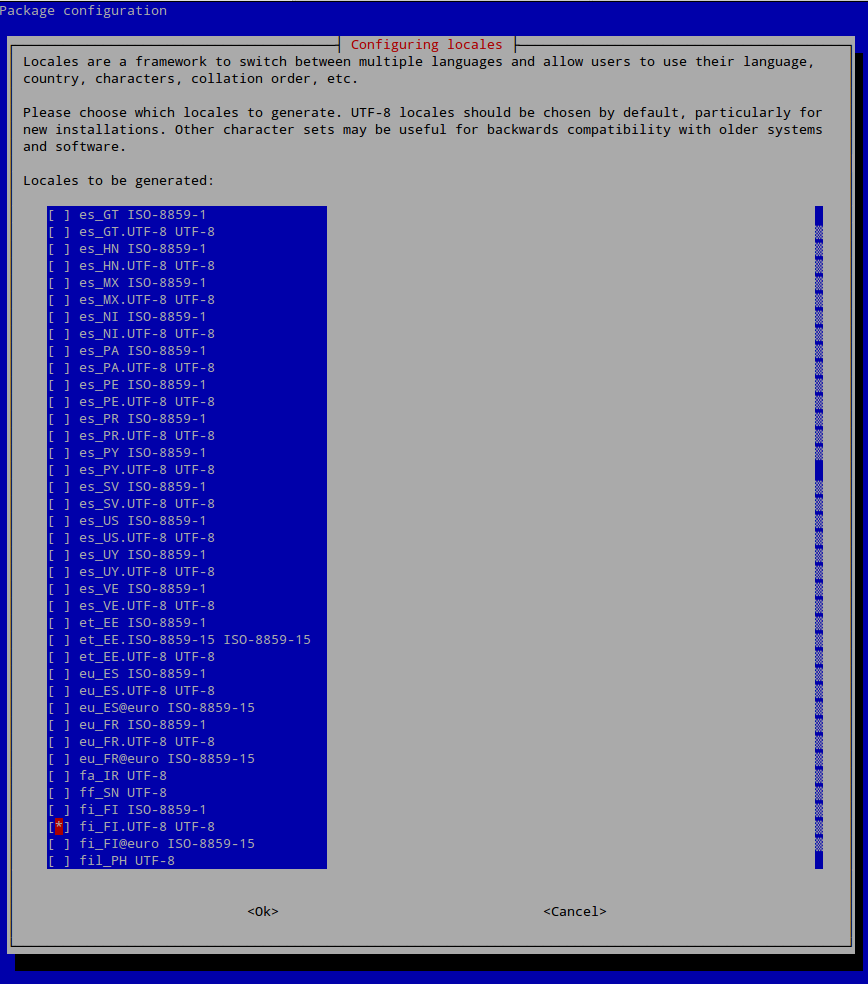
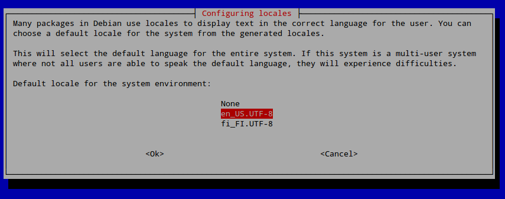

Debian modifications needed before FreeLCS installation
Debian support was added in FreeLCS version 3.0. Later Debian releases are
also supported by FreeLCS.
Canonical builds its Ubuntu releases using Debian software packages.
Therefore both of these Linux distributions have much in common, but also
have some differences. Some small config changes must be made to Debian
before FreeLCS can be installed and run.
Remove cd / dvd installation media from sources.list
- Debian adds the install cd / dvd as a available repository for
software package installation. When you install new software then Debian
first tries to find it on the installation cd / dvd. If the disk is not
inserted, then installation stops with an error message. This prevents
FreeLCS from installing the software packages it needs. The installation
disk must be removed from the list of available installation sources.
This list is a simple text file that can be manually edited.
- Open the Terminal ( /Applications/Accessories/Terminal )
and get root provileges by giving the following command (will ask for
root password):
su root
- Open the installation source list to a text editor in the terminal
with the following command:
nano -w /etc/apt/sources.list
- Find lines that start with: deb cdrom
and add a # character in front of each.
This disables the line.
- Example: the following line:
deb cdrom:[Debian GNU/Linux 9.4.0
_Stretch_ - Official amd64 DVD Binary-1 20180310-11:21]/ stretch contrib
main
# deb cdrom:[Debian GNU/Linux 9.4.0
_Stretch_ - Official amd64 DVD Binary-1 20180310-11:21]/ stretch contrib
main
- Save the modified file using the keyboard command: ctrl + o
- Exit the nano - editor with keyboard command: ctrl + x
Install the sudo - program and add user to the sudo group
FreeLCS uses the sudo - program to get root permissions
during installation. If sudo is not available then FreeLCS installation
fails.
Debian installs sudo if you selected the 'Desktop' - installation during
Debian install process. To ensure that sudo is installed, try to reinstall
it:
- Get root permissions with the following terminal command (asks for
root password):
su -
(Starting with Debian 10 you need to get root permissions by: su
- or root-users path definitions may not be accessible
and some commands might not be found)
- Install the sudo package:
apt-get -y install sudo
- The user account that you use to run the FreeLCS installer must have
permission to run the sudo - program. This permission is given by adding
the user to the group named 'sudo'. In the following
example we assume that the name of this user account is
'john'. Change this name to your actual user account name.
- Add the user account to the group 'sudo' with the
following terminal command:
adduser john
sudo
- If you are logged in with the user account that you added to the group
'sudo', then you must now log out and back in for the changes to take
effect.
- If sudo installation gives you the error: "unable to locate
package sudo", then some of the required package repositories
are missing from the text file: /etc/apt/sources.list
Below you can see an example of my working sources.list. You must
run apt-get update after you
make changes to the package repository settings so that the database for
available packages gets updated.
Debian 9:
# deb cdrom:[Debian GNU/Linux 9.4.0
_Stretch_ - Official amd64 DVD Binary-1 20180310-11:21]/ stretch contrib
main
deb http://security.debian.org/debian-security stretch/updates main
contrib
deb-src http://security.debian.org/debian-security stretch/updates main
contrib
deb http://ftp.fi.debian.org/debian/ stretch
main
deb-src http://ftp.fi.debian.org/debian/ stretch main
deb http://ftp.fi.debian.org/debian/ stretch-updates main contrib
deb-src http://ftp.fi.debian.org/debian/ stretch-updates main contrib
# stretch-updates, previously known as 'volatile'
# A network mirror was not selected during install. The following
entries
# are provided as examples, but you should amend them as appropriate
# for your mirror of choice.
#
# deb http://deb.debian.org/debian/ stretch-updates main contrib
# deb-src http://deb.debian.org/debian/ stretch-updates main contrib
Debian 8:
# deb cdrom:[Debian GNU/Linux 8.0.0 _Jessie_
- Official amd64 DVD Binary-1 20150425-12:54]/ jessie contrib main
deb http://security.debian.org/ jessie/updates main contrib
deb-src http://security.debian.org/ jessie/updates main contrib
deb http://ftp.fi.debian.org/debian/ jessie main
deb-src http://ftp.fi.debian.org/debian/ jessie main
deb http://ftp.fi.debian.org/debian/ jessie-updates main contrib
deb-src http://ftp.fi.debian.org/debian/ jessie-updates main contrib
# jessie-updates, previously known as 'volatile'
# A network mirror was not selected during install. The following
entries
# are provided as examples, but you should amend them as appropriate
# for your mirror of choice.
#
# deb http://ftp.debian.org/debian/ jessie-updates main contrib
# deb-src http://ftp.debian.org/debian/ jessie-updates main contrib
If you did not install a graphical desktop during Debian install, then
you need to do two more modifications described below. If you did install
a graphical desktop then you can go ahead with the normal
FreeLCS install procedure described in the user manual :)
Ubuntu 16.04 and newer locale can also be fixed by using the method
described below.
If you installed a graphical desktop during Debian installation, then your
locale should be configured correctly, if not then you should configure it
before FreeLCS installation. Locale error messages during program package
installation stops the FreeLCS installer.
su -
(Starting with Debian 10 you need to get root permissions by: su -
or root-users path definitions may not be accessible and some commands
might not be found)
dpkg-reconfigure locales
- Select your locale from the list. Search for your language and the
text "UTF-8". I have selected the Finnish language in the picture below.

- Next window asks you to decide which locale is the system default. In
the picture below I chose the default to be english us.

Now you need to log out and back in for the locale changes to take effect.
Fixing history graphics file fonts
If you did not install a graphical desktop during Debian install, then the
font used to create text on FreeLCS history graphics files is missing. When
the font is missing gnuplot uses an ugly default font which includes only
english characters and not any special characters used in other European
languages.
Install liberation fonts: sudo apt-get install
fonts-liberation
Next create a link to the font that is used when FreeLCS creates history
graphics files:
sudo ln
/usr/share/fonts/truetype/liberation/LiberationSans-Regular.ttf
/usr/share/fonts/truetype/arial.ttf